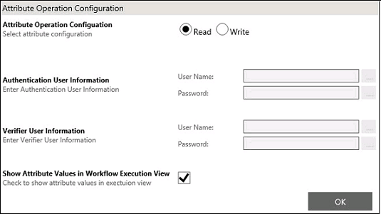
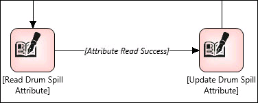

No
You can read entire UDA of array type from System Platform and assign the same to variables of type array within a workflow. You can also read specific index of UDA of type array from System Platform and assign the same to variables within a workflow.
To configure AttributeReadWrite activity to perform a read operation:
The Attribute Operation Configuration dialog box appears.

You can add the variable and type from Variables property in the Start activity.
In a Remote Galaxy, the value of update variable for the Select Attribute is in the following format:
Remote or Paired Galaxy_Name:ObjectName.UDA name
In a local Galaxy, the value of update variable for the Select Attribute is in the following format:
Me.UDA name
The Galaxy Browser option appears only if you design the workflow in the IDE context.
The Relative Reference dialog box appears.
This dialog box displays support for relative referencing. Except for Me, you must manually enter all other relative references. For more details about relative referencing, see Relative Referencing.

You can view the workflow in the Process Execution View dialog box.
In the Execution View, the details of the Read/Write activity executed in a workflow appears in the Step Details tab. The Execution View page can be opened by double-clicking a top level row in any of the reports. The View represents the workflow up to the activity or execution status where the view is opened.
If any error occurs during Read operation, the error message will be logged with an appropriate error code generated from System Platform in the ArchestrA Logger.
For more information about the error logs, see MxStatusDetail ValuesSystem under the section Status and Error Codes of the MXAccess Toolkit User’s Guide of System Platform documentation.